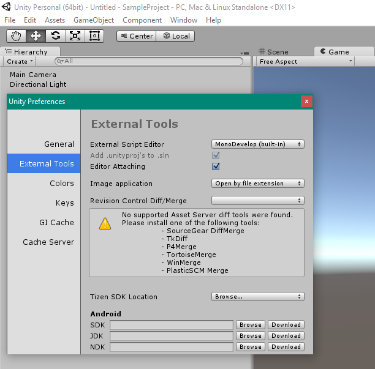

Download Unity 3D
Change the default IDE to Visual Studio Code.
1. Go to Edit > Preferences.
2. Next Unity Preferences Window will appear, Go to External Tools > External Script Editor > Select Browse.
3. You will have to browse where you have installed Visual Studio Code application, Once you have found it double click it.
4. You now have Visual Studio Code as your default IDE for Unity 3D.
Make sure you have installed "Unity Debugger for Unity" extension from Visual Studio Code
Back to top